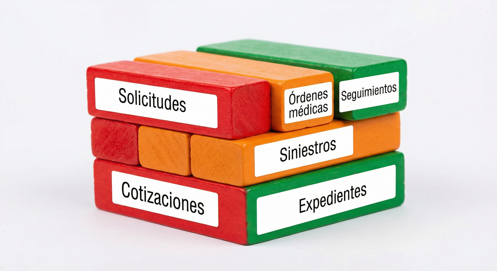
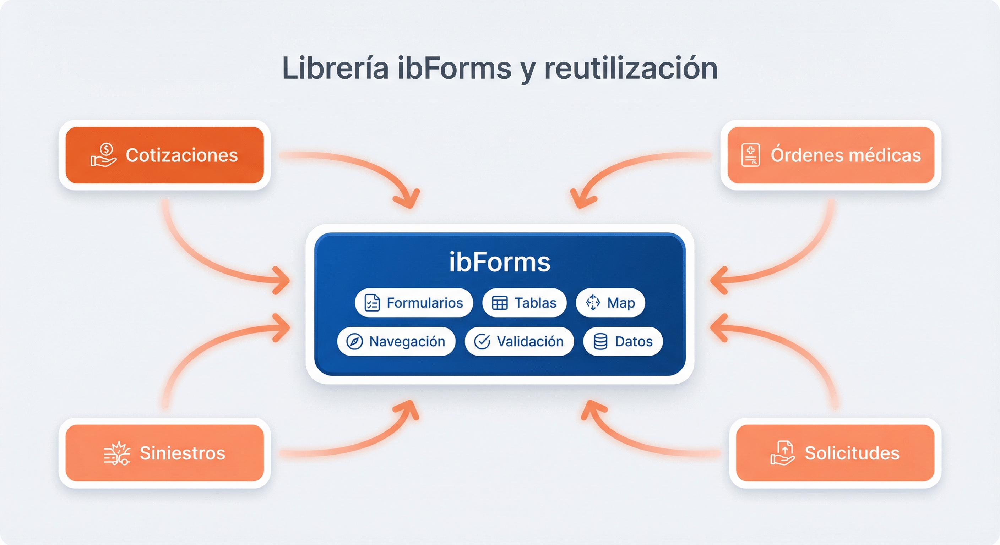
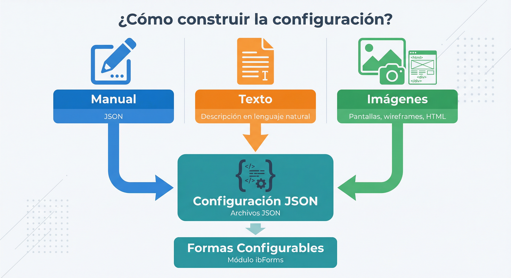
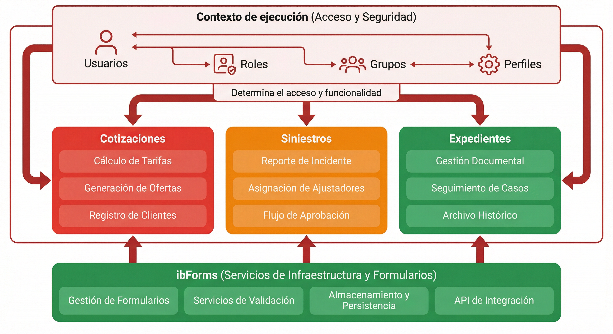
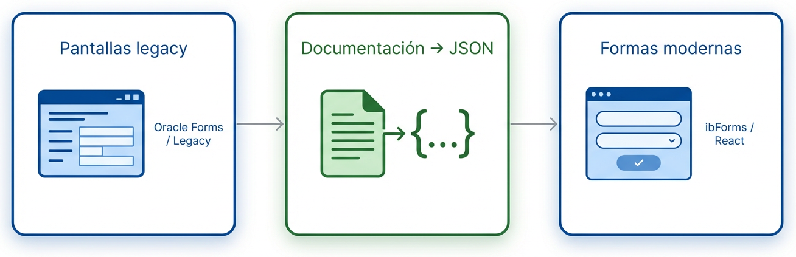
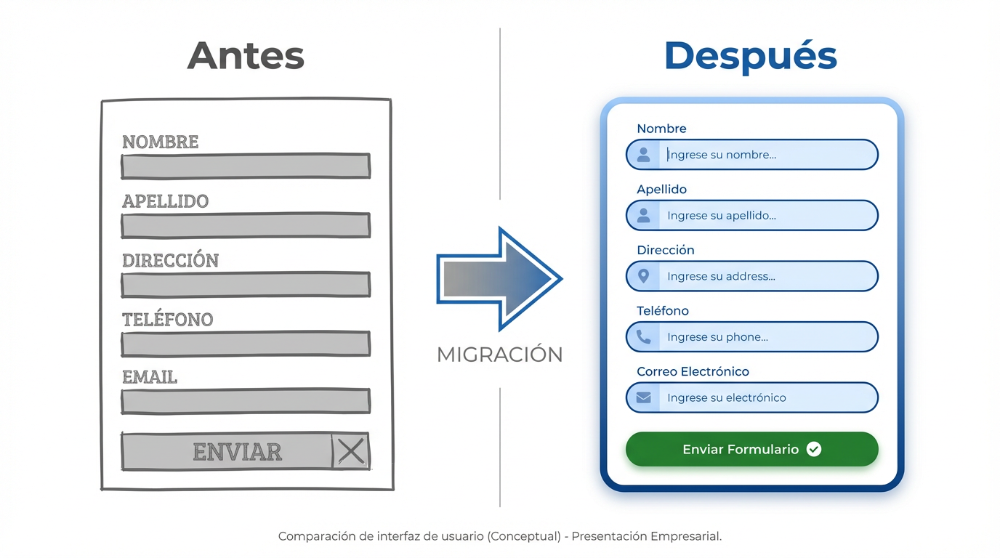
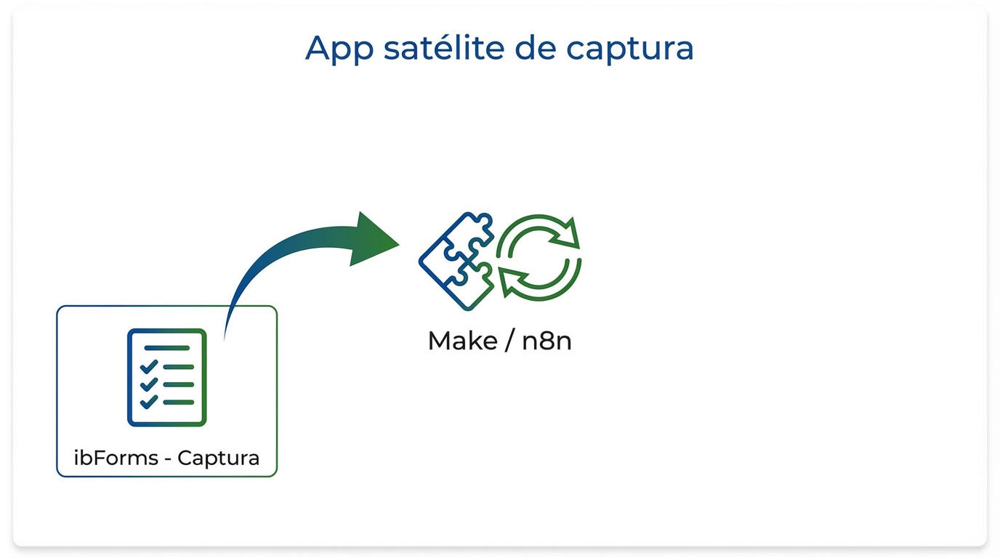
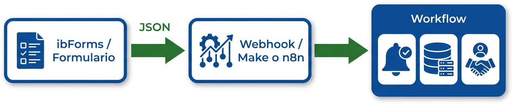

Secuencias de captura de datos definidas por configuración — desarrollo ágil y evolución sin redespliegue.
El Módulo de Formas Configurables permite crear secuencias completas de pantallas de captura de datos para problemas de negocio diversos, a partir de archivos de configuración JSON registrados en tablas de la base de datos. La idea central es poder construir aplicaciones nuevas o actualizar aplicaciones existentes de una forma fácil y confiable: sin depender de redespliegues para cada cambio de pantalla o de negocio, y con un mismo modelo de configuración para todos los flujos. Esto se traduce en reducción del tiempo de desarrollo y en una evolución ágil de los flujos de captura mediante configuración en lugar de programación, lo que permite adaptar con mayor velocidad las soluciones a nuevos productos o procesos.
El siguiente esquema resume la idea: módulos por dominio, reutilización con ibForms y despliegue e integración.

Comúnmente estos módulos pueden construirse usando herramientas de IA para generación de código, lo que permite obtener gran cantidad de componentes que despliegan la funcionalidad requerida. Sin embargo, este enfoque, aunque funcional, presenta carencias importantes:
Frente a esto, el modelo de Formas Configurables centraliza la lógica de presentación y comportamiento en una librería (ibForms) y en configuración (JSON en tablas), reduciendo la cantidad de componentes a mantener y favoreciendo la reutilización en todos los módulos.

En todos los casos, el resultado es el mismo: archivos JSON que se registran en las tablas y que el módulo de Formas Configurables interpreta sin necesidad de herramientas adicionales.


La combinación de Spring Boot y React es un estándar de la industria para aplicaciones modernas y robustas. La arquitectura desacoplada permite que backend y frontend evolucionen de forma independiente, comunicándose mediante una API REST.
Sus principales fortalezas incluyen:
Ventajas del modelo basado en configuración frente a desarrollar cada pantalla a mano:
| Aspecto | Desarrollo tradicional | Formas Configurables |
|---|---|---|
| Nueva pantalla o flujo | Código nuevo por pantalla, pruebas y despliegue | Definición JSON + registro en tablas; sin redespliegue |
| Cambio de textos o validaciones | Modificar código, redesplegar | Actualizar configuración en BD |
| Reutilización entre módulos | Copiar/pegar o librerías ad hoc | Misma API y DynamicForm para todos los proyectos |
| Mantenimiento y auditoría | Repositorio y versionado de código | Configuración en datos, consultable y auditable |
Beneficio principal: Reducción del tiempo de desarrollo y evolución de flujos de captura mediante configuración en lugar de programación. Mayor velocidad para adaptar soluciones a nuevos productos o procesos.
El modelo de Formas Configurables no se limita a aplicaciones nuevas: es una vía práctica para migrar con rapidez sistemas construidos en frameworks antiguos, como Oracle Forms u otros entornos basados en formularios.

El flujo típico de migración puede ser el siguiente:
Este enfoque acerca el concepto de la librería a casos reales de modernización: reducir tiempo y riesgo en proyectos de migración, reutilizando un mismo motor de formularios y una misma forma de definir el comportamiento por configuración.

Las plataformas de integración y automatización de flujos —como Make o n8n— orquestan procesos entre sistemas (notificaciones, escritura en BD, envío a CRMs, etc.), pero suelen requerir aplicaciones satélite que capturen los datos que luego alimentan esos flujos. Es decir: alguien debe introducir la información en alguna interfaz; esa interfaz envía un payload (por ejemplo JSON) a un webhook o API, y la plataforma dispara el workflow a partir de ese dato.

Las aplicaciones construidas con ibForms encajan de forma natural en ese papel:
En resumen: las aplicaciones ibForms pueden actuar como app satélite de captura para Make, n8n o herramientas similares, permitiendo integrar nuevos flujos de trabajo de forma rápida y sin desarrollar integraciones ad hoc por cada formulario.

El módulo resulta especialmente útil en:
Flujos de cotización por producto (personas, vehículo, pymes) con pasos configurables, validaciones y resumen, sin desarrollar una app por producto.
Captura de solicitudes, órdenes médicas, siniestros o seguimientos con formularios y tablas que se adaptan por tipo de proceso.
Evolución de pantallas y textos sin depender de TI para cada cambio; la configuración se ajusta en datos.
Módulos desplegables en contenedores que consumen la API de ibForms y se integran con el resto del sistema.
El Módulo de Formas Configurables permite construir y evolucionar aplicaciones de captura y flujos de negocio a partir de configuración (JSON en tablas), reduciendo tiempo de desarrollo y dependencia de redespliegues. A continuación se recogen los puntos clave de la propuesta:
En conjunto, el módulo ofrece una vía práctica para centralizar la lógica de presentación y comportamiento en configuración y en una librería reutilizable, favoreciendo la coherencia entre módulos y la evolución ágil de los flujos de negocio.